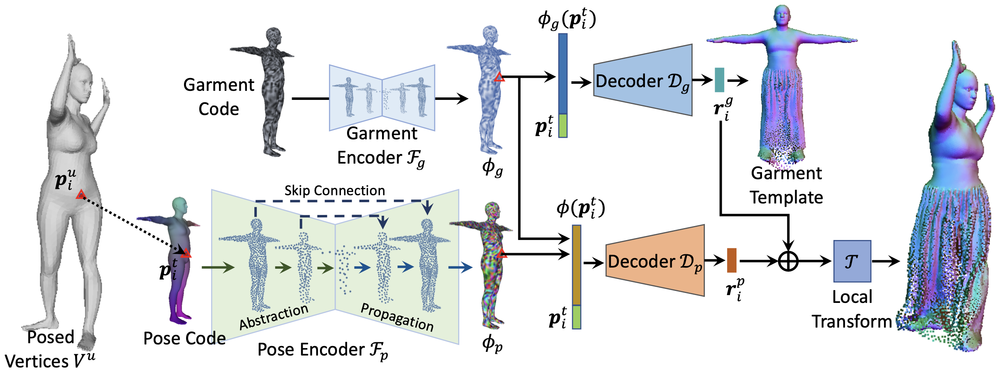
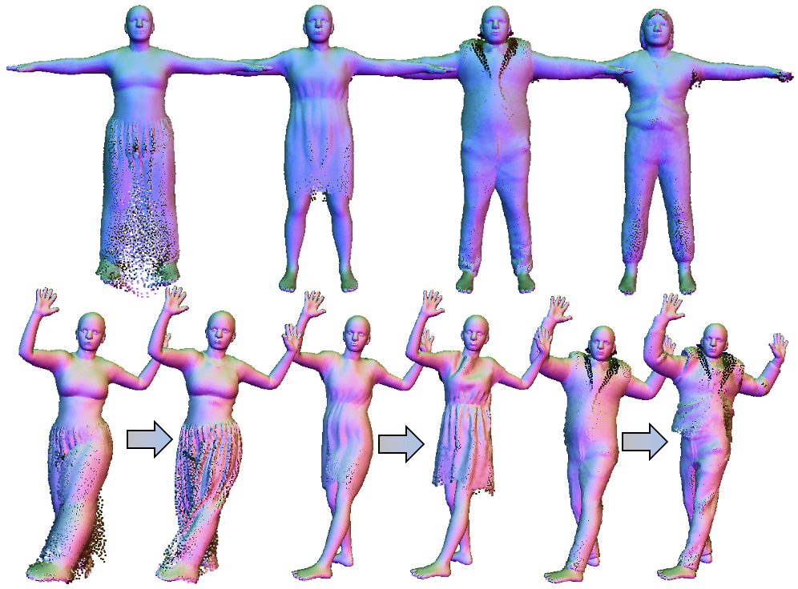
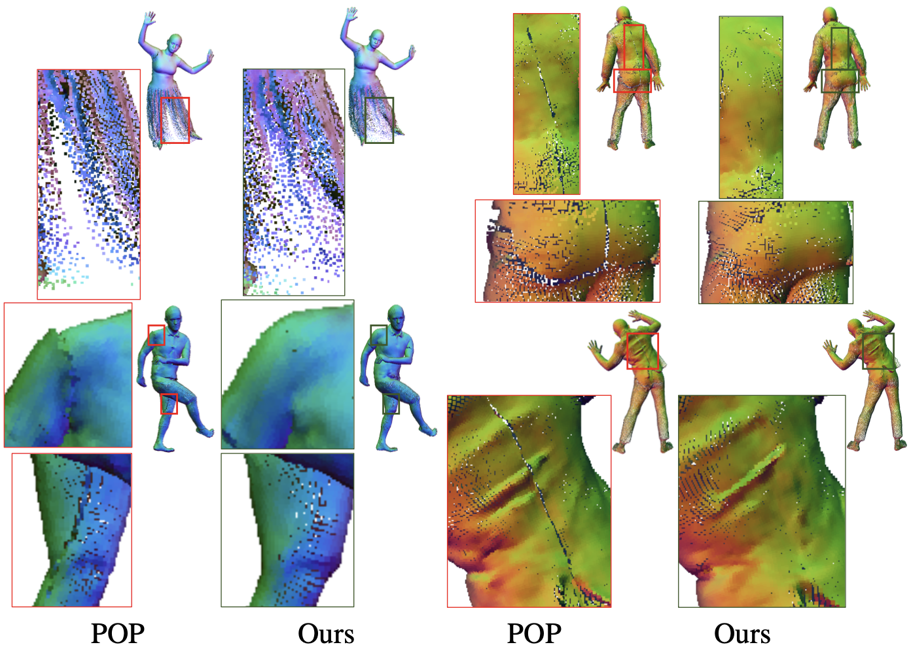
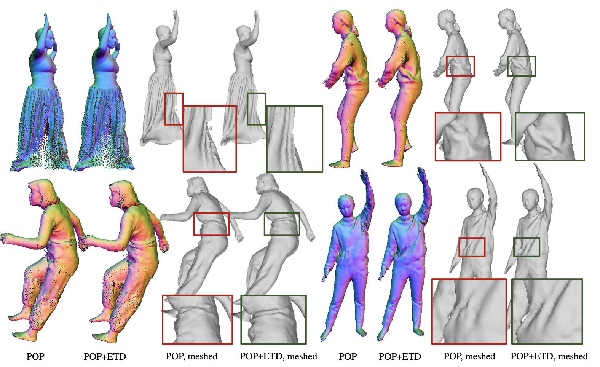

1Tsinghua University 2OPPO Research Institute
Creating animatable avatars from static scans requires the modeling of clothing deformations in different poses. Existing learning-based methods typically add pose-dependent deformations upon a minimally-clothed mesh template or a learned implicit template, which have limitations in capturing details or hinder end-to-end learning. In this paper, we revisit point-based solutions and propose to decompose explicit garment-related templates and then add pose-dependent wrinkles to them. In this way, the clothing deformations are disentangled such that the pose-dependent wrinkles can be better learned and applied to unseen poses. Additionally, to tackle the seam artifact issues in recent state-of-the-art point-based methods, we propose to learn point features on a body surface, which establishes a continuous and compact feature space to capture the fine-grained and pose-dependent clothing geometry. To facilitate the research in this field, we also introduce a high-quality scan dataset of humans in real-world clothing. Our approach is validated on two existing datasets and our newly introduced dataset, showing better clothing deformation results in unseen poses.

Fig 1. Overview. Given an input body model, its pose code and garment code are processed hierarchically by point-based pose and garment encoders for the learning of surface features. For any point lying on the template surface, its features are sampled from surface features accordingly and fed into two decoders for the prediction of the explicit garment template and pose-dependent wrinkle displacements, which will be combined and transformed to the clothing point cloud.

Fig 2. Our method learns to decompose explicit garment templates (top row) and add pose-dependent wrinkles upon them (bottom row).

Fig 3. Comparison of the approach learned on UV planes (POP) and the approach learned on continuous surfaces (Ours). Our solution alleviates the seam artifacts of POP.

Fig 4. Comparison of the clothing deformation in unseen poses. Explicit template decomposition (ETD) helps to capture more natural pose-dependent wrinkle details than POP.
[1] Ma, Q., Yang, J., Tang, S., and Black, M. J., The Power of Points for Modeling Humans in Clothing. In ICCV, 2021
[2] Lin, S., Zhang, H., Zheng, Z., Shao, R. and Liu, Y., Learning Implicit Templates for Point-based Clothed Human Modeling. In ECCV 2022
[3] Ma, Q., Yang, J., Black, M. J., and Tang, S., Neural Point-based Shape Modeling of Humans in Challenging Clothing. In 3DV, 2022
@inproceedings{zhang2023closet,
title={CloSET: Modeling Clothed Humans on Continuous Surface with Explicit Template Decomposition},
author={Zhang, Hongwen and Lin, Siyou and Shao, Ruizhi and Zhang, Yuxiang and Zheng, Zerong and Huang, Han and Guo, Yandong and Liu, Yebin},
booktitle={Proceedings of the IEEE Conference on Computer Vision and Pattern Recognition},
year={2023}
}